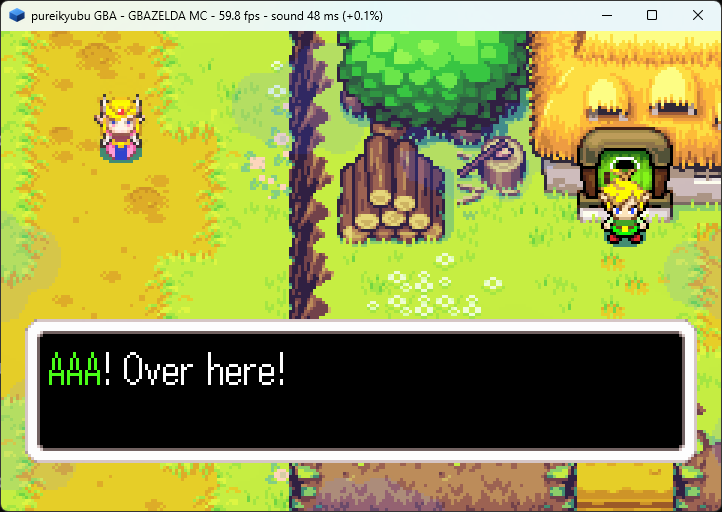

pureikyubu 1.9.1 — заметки о релизе
Версия 1.9.1 — сопроводительный релиз, который доводит до конца то, что начала 1.9. Встроенные Game Boy Advance и Game Boy теперь звучат и отсчитывают время так, как это делает железо: LCD Game Boy работает на собственной частоте 4.194304 МГц, APU Game Boy переписан по руководствам и впервые обзавёлся тестами, звуковой контроллер GBA и его звуковой драйвер BIOS на стороне хоста соответствуют официальному IPL, а проверки таймингов картриджа ресурсных испытаний проходят. На стороне GameCube релиз посвящён интерфейсу и сборке: устаревшая отладочная консоль и Win32-интерфейс убраны в пользу единственного SDL2-интерфейса, порт SDL получает недостающие ему диалоги настроек и карт памяти, TEV обзаводится своими таблицами перестановки, а рекомпиляторы работают на 32-битных хостах и в Windows 7. Портативный стенд закрывается на 362 из 362 тестов.


HuffUnComp, контракт IRQ и микшер были считаны из официального IPL.На этой странице
Главное
- Портативные машины звучат правильно. APU Game Boy ошибался почти в каждом
своём такте — секвенсор кадров шёл в шестнадцать раз быстрее, счётчики длины считали назад,
делители импульсных каналов и канала формы сигнала были вдвое меньше своей частоты (каждая
нота на октаву выше), фазы скважности были неверны, а NR51 перепутан местами, что зеркалило
всю стереокартину. Набор, который теперь это закрепляет (
GbApu, пятнадцать тестов), — новый; у модуля вообще не было тестов. На GBA канал 3 тактировался таймером, уровни микшера были вдвое меньше того, что железо даёт FIFO прямого звука, волновая RAM теряла свой второй банк, а убывающий свип, ушедший в минус, останавливал канал. - Портативные машины отсчитывают время правильно. LCD Game Boy продвигался на
одну точку за четыре такта — правило GBA, — поэтому кадр составлял 280896 тактов
вместо 70224, и каждое устройство, считающее такты, получало вчетверо большую скорость на кадр
изображения. Теперь точечный такт — это собственный такт машины 4.194304 МГц, один такт на
точку. Модель памяти GBA догнала GBATEK: внутренние памяти расходуют свои документированные
такты доступа (включая недокументированный регистр задержек
4000800h), Game Pak использует времена первого/второго доступа изWAITCNTс правилом не последовательного доступа для 128 Кбайт, передача DMA расходует такты во время своего выполнения, а передача больше не перезаписывает регистрыSAD/DAD. - HLE BIOS — это официальный BIOS. Вызовы BIOS на стороне хоста теперь имеют
официальные номера SWI (звуковой драйвер —
1Ah..1Fh/28h/29h, а не28h..2Fh), четыре распаковщика были считаны из официального образа и исправлены (битовый потокHuffUnCompначинается сsource + 4 + (treeSize + 1) * 2и читается как циклически сдвинутое слово; байт флаговRL— это один токен, а не восемь), звуковой драйвер микширует свои двенадцать виртуальных каналов, а контракт IRQ — это контракт железа: подтверждениеIF— задача обработчика. Metroid Fusion на высокоуровневом BIOS теперь рисует те же кадры, что и на настоящем образе. - Собственный картридж ресурсных испытаний Nintendo работает. Картридж AGB
ресурсных испытаний (
AGB_CHECKER_TCHK10) — оракул этого релиза, ровно как настоящий образ BIOS для HLE. Одиннадцать его проверок были закрыты работой над таймингами — пять подтестов MEMORY, флаги состояния и прерывания H-Blank, окно захвата видео,KEY INTR, вытеснение приоритета DMA и регистры управления адресом. - Один интерфейс и один отладчик. Win32-интерфейс (
ui.cpp, 4940 строк, со своими бэкендами DirectSound, GDI иGetAsyncKeyState) и устаревшая отладочная консоль убраны; SDL2-интерфейс — единственная сборка, а в меню Debug остался один пункт, открывающий новый отладчик. Порт SDL получает два недостающих ему диалога — Options → Settings… и Options → Memcards. - 32 бита и Windows 7. Рекомпиляторы существуют как модули x86 рядом с
модулями x86-64: 32-битный хост больше не откатывается к интерпретатору, и те же исходники
собирают 32-битный эмулятор. Проекты Windows нацелены на Windows 7
(
_WIN32_WINNT=0x0601) — самую старую Windows, на которой работают SDL2 2.28 и эмулятор. - У TEV Flipper появляются свои таблицы перестановки. Два 2-битных поля
TEV_ALPHA_ENV— это выбор таблиц перестановки для растра и текселя, а не режим и фиксированный выбор компоненты; четыре таблицы — это младшие четыре битаTEV_KSEL_2k. Маска записи BP командного процессора (0xFE) ограничивает самую следующую запись в регистр — именно это не даёт общим полезным нагрузкам библиотеки затирать друг друга. Пончики демкиtev-swapвыходят серыми (0.0% насыщенных пикселей, было 69%).
Добавлено
Сторона Game Boy портативного ядра
- Набор
GbApu(пятнадцать тестов) и наборGbPpuдля машины Game Boy, у которой их не было: частоты делителей четырёх каналов против формул частоты из руководств, фазы скважности импульсных сигналов, таймер длины, секвенсор кадров на 512 Гц с огибающей на 64 Гц и свипом на 128 Гц, порядок доступа к волновой RAM и сдвиги громкости, последовательность LFSR шумового канала, микширование NR50/NR51, точный такт дискретизации, PCM12/PCM34 (взгляд CGB на четыре генераторных схемы), собственный фильтр высоких частот CGB и настройка, которая его отключает. На стороне LCD: тайминги режимов в собственных тактах машины (один такт на точку, 456 на строку), прерывания STAT/LYC, карта атрибутов CGB, правила совместимости DMG и OPRI, банк назначения HDMA и белое поле при выключенном LCD. - Две картинки Acid2 пиксель в пиксель совпадают с эталонными изображениями Мэтта
Карри —
dmg-acid2на DMG,dmg-acid2на CGB в режиме DMG (оттенок в оттенок через собственную серую шкалу эмулятора) иcgb-acid2на CGB. Именно они нашли потерянные прерывания STAT на начале строки, и они же — сквозная проверка построчного рендерера. - Способ послушать и сравнить:
--wav <file>записывает микс в обоих стендах,--rate Nменяет частоту дискретизации, а--no-hpfотключает фильтр высоких частот DMG/CGB (audio.highPassFilter) — то, что нужно записи, которую будут фильтровать позже. Стенд GBA также получил--log(собственные предупреждения ядра, например о нереализованном SWI, раньше выбрасывались) и--bios. - Интерфейс Game Boy смешивает каждый показываемый кадр с предыдущим —
lcd_effectиз dmgemu, шлейф, который оставляет LCD при движении картинки. Он живёт вHost::Present, поэтому прогоны.gbaи.gb/.gbcполучают его из одного и того же кода, аvideo.lcdEffectего отключает (по умолчанию включён). Ядер это не касается: кадр, который читают скриншоты и отладочный интерфейс, остаётся чистым. --keysпробрасывается в машину Game Boy — именно так был проверен прогон Metroid II ниже.
Сборка и инструменты
- Рекомпиляторы на 32-битных хостах (задача #417).
gekkojit_x64.cpp,gekkojit_ps_x64.cpp,dspjit_x64.cppиgekkojit_layout_x64.hпомечены как только для x86-64, и у каждого появился 32-битный собрат (jit_x86.h,gekkojit_layout_x86.h,gekkojit_x86.cpp,gekkojit_ps_x86.cpp,dspjit_x86.cpp). Транслятор — это транслятор x86-64, приспособленный к восьми регистрам общего назначения, четыре из которых сохраняются вызываемым, а раскладка записана вgekkojit_layout_x86.h; хеш состояния нагрузки одинаков во всех четырёх сборках JIT — MSVC и GCC, x86-64 и i386. - Windows 7. Проекты Visual Studio и
CMakeLists.txtнесут оба набора модулей и позволяют препроцессору выбрать; проекты эмулятора определяют_WIN32_WINNT=0x0601иWINVER=0x0601, и ни один исходник эмулятора не вызывает API новее этого, поэтому цель Windows 7 у SDL2 2.28 — самая старая, на которой эмулятор работает. - SDL2 линкуется как статическая библиотека из поставляемого дерева.
testing/gba_benchобзавёлся наборамиBus,HleBios,GbBus,GbApu,GbPpu,AudioиSettings; проект Visual Studio и Readme следуют за ним, поэтому сборка стенда для Windows компилирует тесты, сравнивающие BIOS хоста с официальным образом.
Изменено
SDL-интерфейс — единственный (задачи #421, #422, #420)
- Win32-интерфейс и его бэкенды удалены:
ui.cpp(главное окно, меню, селектор игр, окно свойств настроек, диалоги контроллеров и карт памяти),audio.cpp/audio.h(DirectSound),video.cpp(GDI) иpad.cpp(GetAsyncKeyState), вместе с шаблонами диалогов, меню, ускорителей и растровых изображений, которые использовали только они. Интерфейсы, на которых говорит остальной эмулятор, остаются на своих местах; иконка приложения остаётся в ресурсном скрипте. - Настройки двух портов снова представляют собой одну пару файлов
(
Data/DefaultSettings.jsonиData/Settings.json); разделение Windows/SDL исчезло, а вместе с ним исчез и ключDOLDEBUG, который не читался с тех пор, как была удалена отладочная консоль. - Устаревшая отладочная консоль удалена (
cui.*,cuinull.cpp,cuisdl.cpp,debugui.*). В меню Debug обоих портов остался один пункт, Open Debugger…, который открывает или закрывает сессию DebugUI2; отчёт о сбое доходит до интерфейса той же командойUIReport, что и раньше, когда консоль не была открыта. - Порт SDL снова умеет монтировать папку DolphinSDK — пункт File → Mount DolphinSDK as
DVD… был там заглушкой, а теперь открывает обозреватель каталогов и вызывает
DvdMountSDK. - Диалог настроек и карты памяти (задача #420). Options →
Settings… — одно окно с вкладкой на каждую страницу окна свойств Win32: каталоги,
которые сканирует селектор, и файловый фильтр (GUI/Selector), а также версия
эмулируемой консоли и три образа прошивки (GCN Hardware). В списке версий есть
пункт «User defined», чтобы правленая вручную конфигурация показывалась как есть; Apply
записывает конфигурацию так же, как
SaveSettings, причём пути проходят обратно черезAddSelectorPath, а Cancel отбрасывает копию. Options → Memcards — окно на каждый слот: флаг подключения, политика сохранения (SyncSave) и файл карты, причём Create New… спрашивает один из шести размеров, которые есть у железа. В отличие от диалога Win32, который не трогал работающую карту до следующей загрузки, OK переназначает (сбрасывая карту, которую заменяет) или подключает уже открытую карту.
Ядро GBA/Game Boy
- Звуковой контроллер по GBATEK и руководству AGB. Канал 3 тактируется
NR33, а не таймером, — бит 14SOUND3CNT_Xэто флаг длины и ничего больше, и только два FIFO прямого звука управляются таймером; волновая RAM — это два банка по 16 байт, и процессор обращается к тому, который не проигрывается; микшер следует за «Max Output Levels» из GBATEK (канал PSG занимает четверть выходного диапазона, FIFO — весь его целиком, а уровеньSOUNDCNT_L«не влияет на прямой звук»); убывающий свип, который ушёл бы в минус, сохраняет частоту вместо остановки канала; а сумма обрезается 10-битным выходным каскадом так, как её обрезает железо. - Устройство — это такт машины. Машина складывает каждый смикшированный ею сэмпл в буфер микшера, а устройство проигрывает его из собственного аудиовызова. Буфер держит запас в три видеокадра, выбрасывает то, что не помещается, заполняет период, который не может заполнить, тишиной вместо устаревших сэмплов и сообщает свою задержку, разрывы и потери в заголовке окна. Кадровый цикл придерживает машину только тогда, когда буфер действительно убежал вперёд, а режим ускорения выбрасывает свой звук. Коррекция частоты — это медленный ПИ-регулятор по отфильтрованному уровню, коэффициенты которого вычислены из контура: старый однострочник отвечал на пилообразный сигнал недемпфированным интегратором, период которого получался равным половине кадра, что качало полные ±1% между соседними кадрами и выбрасывало 9450 кадров в минуту.
- Повторяющийся DMA ведёт свой источник потоком. GBATEK перезагружает
CNT_Lи, при необходимости,DADпри повторе — но неSAD, поэтому указатель источника продолжает движение. Звуковой DMA всегда повторяющийся (FIFO запрашивает по 16 байт за раз), поэтому старый код перезапускал поток по тому же адресу при каждом пополнении, и FIFO проигрывал один и тот же 16-байтовый блок снова и снова — высокий жужжащий писк, отдалённо следовавший за мелодией. Передача также не меняет регистрыSAD/DAD, в которых хранятся значения, записанные процессором; рабочие указатели живут в движке. - Захват видео идёт по тем строкам, которые отводит ему GBATEK — запускается
на
VCOUNT=2, повторяется на каждой строке развёртки, останавливается наVCOUNT=162с самостоятельным сбросом бита разрешения канала, — а запрос DMA с более высоким приоритетом, пришедший во время выполнения передачи, обслуживается на следующей границе блока, а не теряется до следующего запуска канала. - EEPROM отвечает только в своём окне. GBATEK помещает микросхему по адресам
D000000h-DFFFFFFhна картридже объёмом 16 Мбайт или меньше (или в последних 256 байтах полного образа на 32 Мбайта); везде в остальном шину по-прежнему ведёт ROM. Именно это позволяет игре выполнять собственную процедуру работы с EEPROM из картриджа — Minish Cap выбирает инструкции между запросом на чтение и передачей данных. Холостое чтение микросхемы вдобавок выдаёт бит 0 — линию готовности, которую игры опрашивают после записи, — вместо возврата зеркалированного ROM. - Массив каналов звукового драйвера на стороне хоста — это двенадцать записей по 40h
байт по адресу
50h + n * 40h(GBATEK: каналы 1–12), а не шестнадцать по 30h; размер блока DMA следует биту 10CNT_Hна каждом канале, а не только на DMA3; стоимость блока DMA следует ширине шины источника и приёмника; а внутренние памяти расходуют свои документированные такты, причём задержки встроенной WRAM на 256K взяты из недокументированного4000800h. - Бит 15
WAITCNTв состоянии покоя (доступный только для чтения флаг типа Game Pak) больше нельзя выставить записью, а бит 5DISPCNT— флаг «H-Blank Interval Free» — больше не означает для рендерера молча что-то другое.
HLE BIOS для GBA
- Номера SWI — официальные: звуковой драйвер по
1Ah..1Fh, аVSyncOff/VSyncOnпо28h/29h. Раньше весь блок был по28h..2Fh, а1AhназывалсяDivArm2, поэтому наSoundDriverInitигры отвечали делением, и её музыка никогда не начиналась. HuffUnComp,BitUnPack,LZ77(оба варианта записи),RLи два дельта-фильтра были заново считаны из собственного кода официального образа и теперь покрыты дифференциальным тестом, который кодирует случайные данные в корректные потоки и сравнивает байты, записанные обеими реализациями.MidiKey2Freqиспользует собственную фиксированную точку BIOS — таблицу полутонов 16.16, октаву как сдвиг, усечённое произведение, точное значение как наклон, — а не догадку с двойной точностью.- Точки входа звукового драйвера реализованы по тому, что зонд может измерить в настоящем
BIOS: идентификатор рабочей области
68736D53hи её размер0FB0h, раскладкаpcmbuf(две половины по0630hбайт со смещениями+0350hи+0980h), два DMA для FIFO (B600h: повторяющийся, 32-битный, с инкрементирующимся источником),SOUNDCNT_H210Eh, перезагрузка таймера 0 для каждого индекса частоты воспроизведения иSoundDriverMain, который микширует двенадцать виртуальных каналов с собственным автоматом огибающей драйвера и уровнями в фиксированной точке. Реверберация не моделируется, а шаг сэмплов — это аккумулятор 16.16, а не точная арифметика драйвера. - Контракт IRQ — это контракт железа: собственный boot ROM больше не подтверждает
IFперед диспетчеризацией, потому что официальный BIOS тоже этого не делает. Обработчик Metroid Fusion читаетIF, чтобы понять, что произошло, поэтому заранее подтверждённый IF оставлял его без дела каждый кадр, и игра зависала на своём титульном экране. Драйвер связи SIO теперь устанавливает собственный обработчик, который подтверждает прерывание и возвращается, — именно так и должна поступать программа, разрешающая это прерывание.
Gekko, TEV и сборка
- Таблицы перестановки TEV и операция сравнения. Два 2-битных поля
TEV_ALPHA_ENV— это выбор таблиц перестановки (выбор растра и текселя вGXSetTevSwapMode), а четыре таблицы — это младшие четыре битаTEV_KSEL_2k/2k+1;TEV_KSELсбрасывается в таблицы, которые программирует инициализация GX (RGBA/RRRA/GGGA/BBBA). Операция сравнения делит те же биты, поэтому декодируется так, как её кодирует драйвер, — её помечает четвёртое значение поля смещения, бит sub выбирает сравнение, — а маска проверяет значение стадии до сдвига. - Маска записи BP командного процессора (0xFE). Запись в неё ограничивает,
какие биты самой следующей записи в регистр BP будут обновлены, а затем сбрасывается сама.
Библиотека использует её для регистров, полезную нагрузку которых делят две возможности, —
выбор констант K и таблицы перестановки
TEV_KSEL, режим отсеченияGEN_MODE, режим смешиванияPE_CMODE1, — поэтому без неё таблицы перестановки затирались бы первым жеGXSetTevKColorSel. Маска идёт вниз по цепочке CP вместе с записью, и каждый блок вливает её в собственное значение регистра. - Две детали арифметики TEV. Интерполированный коэффициент смешивания — это
дробь u0.8, нормированная на 256, поэтому 255 — ровно 1.0, а 128 — это 129/256 (все три копии
модели делили на 255 и отличались на половину младшего разряда), а
DIVIDE_2усекает без округления. Побитово точная модель стадии этой схемы после этого совпадает с демкой на всех 64 состояниях перебора аргументов, всех 24 арифметических состояниях и 11 состояниях, которые раньше разделяли две модели. - Дизассемблер. Бит 22 передачи полуслова выбирает форму смещения и был
инвертирован, поэтому каждое непосредственное смещение печаталось как регистр, а каждое
регистровое — как непосредственное: собственные распаковщики официального BIOS были нечитаемы.
Теперь сдвиг регистрового смещения печатается, а запись обратно при пре-индексации стоит вне
скобки (
[r1, #4]!, а не[r1, #4!]). И то и другое — то, что сделало возможной работу над HLE BIOS выше. - Модуль GBA использует типы stdint (задача #419) вместо проектных псевдонимов
u8/s8;json.cppсамодостаточен (стандартная библиотека,verify.hи собственный кодек UTF-8), поэтому портативное ядро компилирует его рядом со своими исходниками без SDL, OpenGL и ImGui, а читатель настроек GBA использует общий движок Json (задача #423) вместо своего рукописного разборщика. - Окно отладчика включается по желанию в
--gba/--gb:emulation.debugger(по умолчанию false) решает, открывается ли оно вместе с машиной; узел JDI и транспорт MCP поднимаются в любом случае, аF2, как и раньше, открывает и закрывает окно.
Исправлено
Портативные машины
- Такт Game Boy (найден захватом
zelda.gbи сравнением с другим эмулятором). LCD продвигался на одну точку за четыре такта, поэтому кадр составлял 280896 тактов вместо 70224: APU микшировал 2940 сэмплов на кадр там, где устройство проигрывает 738.35, поэтому три четверти музыки выбрасывались рывками (то самое дребезжание, которое не проходило, как ни управляй буфером); DIV шёл на 64 кГц вместо 16384 Гц, а последовательный порт — на четырёхкратной своей скорости передачи; и процессору приходилось успевать за один кадр сделать работу четырёх. Теперь эмиттер работает на одном такте на точку. - Каждая частота APU Game Boy. Секвенсор кадров шагал каждые 512 системных
тактов вместо 8192, поэтому длина, огибающая и свип шли в шестнадцать раз быстрее, и вдобавок
он тактировал длину на шаге 7 (320 Гц с дрожанием вместо 256). Счётчики длины загружали
64 - NRx1и считали вверх до 64 — то есть назад. Делители импульсных каналов и канала формы сигнала работали на(2048 - x) * 2и(2048 - x)вместо* 4и* 2. У четырёх скважностей были верные соотношения, но неверные фазы. Общая громкость NR50 никогда не применялась к миксу, а половины NR51 были перепутаны местами, что зеркалило всю стереокартину. Теперь такт дискретизации сохраняет ту долю такта, которую раньше отбрасывал округлением. - Прерывания STAT на начале строки.
BeginVisibleLineвызывалEnterMode(2)и выбрасывал его возвращаемое значение, поэтому запрос STAT, который порождает начало строки, — включение источника режима 2 и LYC, совпадающий с новымLY, — никогда не доходил доIF. Прерывания режима 2 и LYC каждой видимой строки терялись (те, что внутри VBlank, по-прежнему работали — вот почему это пряталось), а эффекты развёртки, управляемыеLY=LYC, которые рисуют волосы, глаз, рот и подвал Acid2, никогда не выполнялись. Теперь запись в регистр может поднять линию STAT (включение источника, условие которого уже истинно, или записьLYC, делающая его совпадение «постоянным»), и бит 2 STAT остаётся живым, пока LCD выключен. - CGB, запускающий монохромный картридж (умолчание интерфейса для игры DMG),
игнорировал собственные правила отображения DMG: бит 0
LCDCбыл главным приоритетом CGB вместо гашения фона и окна, бит окна им не переопределялся, объекты приоритезировались по позиции в OAM, а не по X (OPRIсохранялся, но никогда не доходил до PPU), карта атрибутов банка 1 читалась, хотя руководство говорит, что этот банк «отсутствует в этом режиме», аBGP/OBP0/OBP1игнорировались вместо индексации палитр CGB. - VRAM DMA CGB всегда писал в банк 0, тогда как руководство прямо говорит,
что приёмником служит
VBK, а чтениеHDMA5во время активной передачи HBlank возвращало установленный бит 7, который Pan Docs определяет как «Not Active». Штраф режима 3 за OBJ11 - (X mod 8)падал до 4 или 5 на последних двух столбцах тайла, тогда как Pan Docs снижает его не ниже 6. Выключение LCD оставляло в буфере кадра последнюю картинку вместо белого поля выключенного экрана. - LCD GBA, выверенный по руководствам. BG2 аффинный в режиме 1 (экран
«SQUARE ENIX PRESENTS» из Final Fantasy V Advance был полем шума); bitmap-режимы производят
выборку через матрицу BG2 (boot ROM и запуск без BIOS оставляют единичную матрицу, как её
программирует настоящий BIOS); bitmap-строка режима 5 — это 320 байт, а не 480 из режима 3;
мусорные размеры окна доходят до края экрана; окну OBJ нужны биты 12 и 15
DISPCNT; Green Swap меняет местами зелёный каждой пары точек вместо байтовой перестановки каждого пикселя; полупрозрачному OBJ нужен второй приёмник, выбранный вBLDCNT, а бит эффекта окна отпирает как альфа-смешивание, так и яркость; OBJ, чей 8-битный диапазон Y уходит за строку 255, заворачивается наверх; а 28-битная аффинная опорная точка хранится со знаком. - Смещения прокрутки текстовых слоёв.
BGxHOFS/BGxVOFSхранят девятибитное смещение (0–511), но брались через читаемую форму регистра, которую PPU обрезал до восьми бит. Демонстрационная заставка Castlevania: Circle of the Moon прокручивала комнату до точки 296, рендерер использовал 40, и верх экрана показывал то, что случилось лежать в другой половине карты, — полосу зелёного «испорченного фона», — а камера казалась замороженной относительно игрока. - Аффинный OBJ двойного размера закреплён в середине своей удвоенной области.
Атрибуты X/Y — это верхний левый угол области отображения, а центр поворота/масштабирования —
середина этой области: обычно на половину базового размера правее и ниже опорной точки, а при
установленном флаге двойного размера — на целый базовый размер. Каждый удвоенный OBJ сидел на
половину базового размера слишком высоко и слишком далеко влево; именно это закрепила
загрузочная анимация настоящего BIOS (буквы 64x64 на кадре приземления скачком опускались на
32 пикселя). Чёрные полосы Final Fantasy V Advance также закрепляют заворот Y у OBJ: его ряды
OBJ 16x16 при
Y=240..243заполняют промежутки, которые оставляют завернувшиеся строки. - Прерывание совпадения V-Counter — это фронт, а не уровень.
UpdateVCountMatchзапрашивал его всякий раз, когда условие совпадения было истинно при очередном вычислении, а запись вDISPSTATтоже вызывает это вычисление, поэтому программа, которая записывала регистр обратно, покаVCOUNTвсё ещё равнялся её значению, получала два прерывания совпадения на одну строку. Minish Cap пишетDISPSTATна строке 80 каждого кадра — в обработчике только что принятого совпадения, — а его собственная копия звукового драйвера BIOS продвигает свой секвенсор раз на каждое совпадение, поэтому вступительная музыка тикала дважды за кадр: ноты шли вдвое быстрее, и трек сбивался с последовательности на 11-й секунде. Теперь это фронт стробированного условия (совпадение И разрешение) — именно это означает «запрашивается, когда флаг становится установленным» из GBATEK; программа, разрешающая прерывание, когда счётчик уже совпал, всё равно его получает. - Файл сохранения свежего картриджа Minish Cap оказывался испорченным. Линия
готовности EEPROM (бит 0 шины ROM в окне микросхемы) никогда не выдавалась, поэтому опрос
библиотеки сохранений после записи всегда видел занятую микросхему, каждая запись завершалась
таймаутом, и после трёх попыток библиотека ставила свой маркер сбоя
DAMEDAMEповерх блока, в который писала, — включая заголовки файлов. С линией готовности на шине каждая запись подтверждается с первой попытки. - Массив каналов звукового драйвера HLE был смещён. Шестнадцать записей по 30h байт занимают те же 300h байт, что и настоящие двенадцать по 40h, и это скрывало ошибку: на своё место, куда смотрит официальный драйвер, попадал только канал 0, поэтому каналы 1..11 микшировались из байтов огибающей и громкости следующего канала — на слух это неверные ноты, треск и кажущееся изменение скорости.
- Форма смещения передачи полуслова в дизассемблере (см. «Изменено») — именно она сделала распаковщики читаемыми.
Ядро, стенд и оболочка
- Thumb
LDMIA/STMIAпропускала инструкцию.ThumbMultipleTransferтрактовал бит 7 списка регистров как «r15 в списке», но список регистров Thumb имеет ширину восемь бит (r0–r7) и никогда не может назвать r15. BIOS загружает свой блок параметровBitUnPackкомандойLDMIA r1!,{r5,r7}, поэтому следующая за ней инструкция пропускалась, блок оставался нулевым,BitUnPackчитал нулевое число элементов и выходил ни с чем: у семи спрайтов-букв не было данных глифов, и загрузочная анимация была невидима. Вот почему собственный boot ROM эмулятора ничего не рисовал. SVBKотображает записанный 0 в банк WRAM 1. Картридж только для DMG работает на эмулируемом CGB в режиме совместимости, а регистр отображал записанный 0 в банк 0. При значении после включения0xF8это накладывало0xC000-0xCFFFи0xD000-0xDFFFна одну страницу в 4 Кбайта, поэтому у игры, чьи переменные или стек живут в верхнем банке, собственная рабочая область младшей RAM перезаписывала их: Metroid II хранил адрес возврата по0xDFFB, читал обратно0x0000и перезапускался с вектора сброса бесконечно.- Однобайтовые последовательности UTF-8 в Json. Таблица кратчайших форм
локального декодера содержала записи только для двух, трёх и четырёх байт, поэтому каждый
ASCII-символ выходил как U+FFFD. Поскольку именно
AddUtf8String— это то, чем весь отладочный интерфейс строит свой Json, регрессия портила каждый ответ, сделанный этим путём — Markdown-панели отладчика, дизассемблер и имена символов, отчёты, ответы инструментов MCP и время ОС в строке состояния (которое показывало ряд вопросительных знаков). Из 16 сбоев юнит-тестов на родительском коммите 15 были этим. - Место вызова
Apu::ReadSamplesв тестах передавало счётчикmaxFramesвint16_t buffer[128], тогда как вызов пишет по два сэмпла на кадр: 256-байтовый буфер в стеке переполнялся, и прогон падал позже, посреди другого набора. Найдено с помощью AddressSanitizer; теперь буферы рассчитаны на стереокадры. - Размер блока передачи DMA следует биту 10
CNT_Hна каждом канале (см. «Изменено») — вот почему покадровый 32-битный блокDMA0движка Minish Cap раньше копировался наполовину.
Известные проблемы
- Официальный BIOS GBA выполняет свою загрузку, и его анимация теперь рисуется:
BG3 режима 2, видимый только внутри окна OBJ, с девятью оконными спрайтами 32x64/64x64,
WINOUT = 0x3F27и альфа-смешиванием вокруг. И собственный boot ROM эмулятора, и настоящий образ передают управление картриджу. Что осталось смоделировать на стороне картриджа — это окно EEPROM полного образа на 32 Мбайта (последние 256 байт); стенд работает с раскладкой на 16 Мбайт, где микросхема отвечает где угодно поD000000h-DFFFFFFh. - Картинка настоящего картриджа Game Boy Color всё ещё в работе: машина загружается, выполняет собственный boot ROM и проходит свои тесты, но в некоторые моменты её кадр не совпадает с VRAM. Оставшееся расхождение читается как длина строки режима 3 (строка составляется сразу, а не точка за точкой), тайминги HBlank/HDMA и внутренние для PPU окна блочного чтения VRAM. DMG и CGB в режиме DMG точны относительно эталонов Acid2.
- Бюджет тактов на OBJ на каждую строку у GBA и бит 5
DISPCNTне моделируются, и конфликтный такт VRAM/OAM/палитры («+1 такт, если GBA обращается к видеопамяти в тот же момент») тоже: обращения занимают свои документированные 1/1/2 такта, но никогда лишний. Буфер предвыборки картриджа смоделирован как правило задержек, а не как настоящий буфер на 8 полуслов. - Передача DMA, вытеснившая другую, доходит до своего конца, прежде чем вытесненная
возобновится, вместо того чтобы две чередовались по одному блоку. Оставшиеся сбои картриджа
ресурсных испытаний Nintendo (проверки задержек/предвыборки,
KEY INPUT SIMPLE) находятся в этой области и записаны вtesting/gba_bench/Readme.mdвместе с адресами его таблицы тестов. - Выходной каскад звука GBA не моделируется:
SOUNDBIASхранится и читается обратно, но ни его уровень смещения, ни разрешение амплитуды ШИМ не меняют микс, который формируется как чистые 16-битные сэмплы. Волновая RAM — это обычная память, а не сдвиговый регистр железа. - Реверберация звукового драйвера не моделируется на пути HLE (биты реверберации режима хранятся, а линия задержки драйвера — нет), а шаг высоты тона — это аккумулятор 16.16, а не точная фиксированная точка драйвера.
- Состояния сохранения, перемотка назад, особенность EEPROM «последний байт — это И старого и нового значений» и регистр поминутного прерывания RTC не реализованы на портативных машинах.
- Режим шины JOY последовательного порта (бит 15
RCNT, контроллер GameCube на порту связи) декодируется, но не обслуживается; режим UART работает на уровне регистров, но у него нет пары. Кабель между двумя экземплярами эмулятора (обычный и многопользовательский) реализован и протестирован. - В сборке для Linux по-прежнему нет звука и ввода для стороны GameCube, а у headless-цели
Linux нет offscreen-бэкенда OpenGL (у цели Visual Studio он есть). Два теста
Settings, которые сравниваютbuild/Data/GBASettings.jsonсо значениями по умолчанию байт в байт, требуют, чтобы у этого файла были окончания строк LF; при выгрузке в Windows сcore.autocrlfсимволы\rсообщаются как расхождение. - Картридж ресурсных испытаний Nintendo не полностью зелёный: десять проверок всё ещё сбоят, и
все они в упомянутой выше области задержек/предвыборки. Тест
Ppuдля GBARegisterReadBackи тестовый ROMmemoryзакрепляют правила данных там, где тайминги приблизительны.
Что дальше
Портативное ядро — работа и следующего релиза: картинка Game Boy Color, оставшиеся проверки картриджа ресурсных испытаний (модель задержек и настоящий буфер предвыборки) и задачи GBA Link и Game Boy Player, ради которых существует встроенная машина, — игра для GameCube с GBA в её порту связи и есть тот тест, который их доказывает.
1.9.1 — сопроводительный релиз внутри линии 1.9. Релиз 2.0 остаётся следующим мажорным релизом — релизом периферии: шина EXI и устройства на ней (карты памяти, Broadband Adapter, RTC), последовательный интерфейс и контроллеры, дисковый интерфейс и привод, а также порт связи, который уже есть у стороны GBA. После этого проект переходит в своё устойчивое состояние планомерного, методичного улучшения.
Сборка
Windows. Откройте scripts/VS2026/pureikyubu.sln в Visual Studio 2026
и нажмите Build. Эмулятор — это SDL2-интерфейс в любой конфигурации — второго порта больше нет, —
и solution содержит те же четыре проекта: pureikyubu, SDL2 (статическая
библиотека), GBA и gba_bench. Собираются и x64, и x86 (Win32),
рекомпиляторы следуют за хостом, а проекты нацелены на Windows 7. Цель
pureikyubu_headless входит в solution, но не собирается командой «Build Solution».
Linux.
sudo apt install libglew-dev libsdl2-dev
git clone https://github.com/emu-russia/pureikyubu.git
cd pureikyubu
git submodule update --init
cd build && cmake .. && make
./pureikyubu pong.dol
cmake -DHEADLESS=ON .. && make # цель без окнаТесты.
MSBuild scripts/VS2026/pureikyubu_test.slnx -p:Configuration=Release -p:Platform=x64
vstest.console.exe scripts/VS2026/x64/Release/pureikyubu_test.dll /Platform:x64У портативных машин собственный стенд — проходят 362 из 362 тестов:
testing/gba_bench/check.sh
testing/gba_bench/get_test_roms.sh # публичные тестовые ROM и две картинки Acid2Прошлые релизы по-прежнему доступны: Release Notes 1.9 · Заметки о релизе 1.9 · Заметки о релизе 1.8 · Заметки о релизе 1.7 · Версия в Markdown. Долгая история работы после релиза 1.6 — в дайджесте.